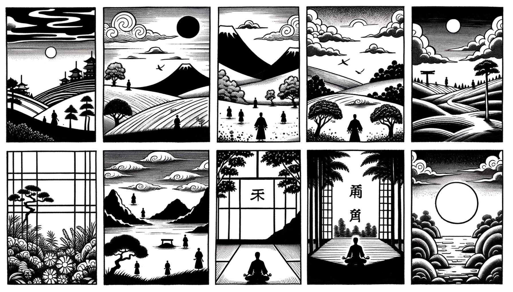

七十五巻 巻一覧
正法眼藏第43 諸法實相
本紹介ページの導入・語彙・深掘り・クイズは tools/regen_volume_intro_from_corpus.py が OpenAI API で生成したものです（入力は当巻の原文からの短い抜粋のみ）。内容はモデル出力のため、重要箇所は必ず原文・教本と照合してください。
出典: https://shomonji.or.jp/zazen/doc/genzou.html
原文・現代語訳の全文は 全文ページを参照してください。
この巻の紹介（導入）
佛祖の現成は究盡の實相なり。實相は諸法なり。諸法は如是相なり、如是性なり。如是身なり、如是心なり。
唯佛與佛、乃能究盡、諸法實相。所謂諸法、如是相、如是性、如是體、如是力、如是作、如是因、如是緣、如是果、如是報、如是本末究竟等。
語彙の足場
- 實相：物事の真実の姿や本質を指す。仏教においては、すべての存在が持つ本来の性質を表す重要な概念である。
- 如是：そのまま、あるがままを意味する言葉。仏教の教えにおいて、事物の本質を表現する際に用いられる。
- 唯佛與佛：仏と仏だけが理解できる真理を指す表現。これは、仏教の深い教えや実相を理解するためには、仏の存在が不可欠であることを示す。
- 參學：学び、修行すること。仏教においては、教えを学び実践する過程を指し、悟りへの道を歩むことを意味する。
- 因果：原因と結果の関係を表す概念。仏教では、すべての現象は因果関係によって成り立っているとされ、行為の結果が未来に影響を与えることを示す。
原文（要点の抜粋）
当巻の冒頭付近からの短い抜粋です。長い引用は載せていません。 全文は全文ページを参照してください。出典はリポジトリ内 doc/正法眼蔵.txt です。原文の参照元: https://shomonji.or.jp/zazen/doc/genzou.html
佛祖の現成は究盡の實相なり。實相は諸法なり。諸法は如是相なり、如是性なり。如是身なり、如是心なり。如是世界なり、如是雲雨なり。如是行住坐臥なり、如是憂喜動靜なり。如是拄杖拂子なり、如是拈花破顔なり。如是嗣法授記なり。如是參學辨道なり。如是松操竹節なり。
釋迦牟尼佛言、唯佛與佛、乃能究盡、諸法實相。所謂諸法、如是相、如是性、如是體、如是力、如是作、如是因、如是緣、如是果、如是報、如是本末究竟等。
いはゆる如來道の本末究竟等は、諸法實相の自道取なり。闍梨自道取なり。一等の參學なり、參學は一等なるがゆゑに、唯佛與佛は諸法實相なり。諸法實相は唯佛與佛なり。唯佛は實相なり、與佛は諸法なり。諸法の道を聞取して、一と參じ、多と參ずべからず。實相の道を聞取して、虛にあらずと學し、性にあらずと學すべからず。實は唯佛なり、相は與佛なり。乃能は唯佛なり、究盡は與佛なり。諸法は唯佛なり、實相は與佛なり。諸法のまさに諸法なるを唯佛と稱ず。諸法のいまし實相なるを與佛と稱ず。
しかあれば、諸法のみづから諸法なる、如是相あり、如是性あり。實相のまさしく實相なる、如是相あり、如是性あり。唯佛與佛と出現於世するは、諸法實相の説取なり、行取なり、證取なり。その説取は、乃能究盡なり。究盡なりといへども、乃能なるべし。初中後にあらざるゆゑに、如是相なり、如是性なり。このゆゑに初中後善といふ。
乃能究盡といふは諸法實相なり。諸法實相は如是相なり。如是相は乃能究盡如是性なり。如是性は乃能究盡如是體なり。如是體は乃能究盡如是力なり。如是力は乃能究盡如是作なり。如是作は乃能究盡如是因なり。如是因は乃能究盡如是緣なり。如是緣は乃能究盡如是果なり。如是果は乃能究盡如是報なり。如是報は乃能究盡本末究竟等なり。
本末究竟等の道取、まさに現成の如是なり。かるがゆゑに、果果の果は因果の果にあらず。このゆゑに、因果の果はすなはち果果の果なるべし。この果すなはち相性體力をあひ罣礙するがゆゑに、諸法の相性體力等、いく無量無邊も實相なり。この果すなはち相性體力を罣礙せざるがゆゑに、諸法の相性體力等、ともに實相なり。この相性體力等を、果報因緣等のあひ罣礙するに一任するとき、八九成の道あり。この相性體力等を、果報因緣等のあひ罣礙せざるに一任するとき、十成の道あり。
いはゆるの如是相は一相にあらず。如是相は一如是にあらず。無量無邊、不可道不可測の如是なり。百千の量を量とすべからず、諸法の量を量とすべし、實相の量を量とすべし。そのゆゑは、唯佛與佛乃能究盡諸法實相なり、唯佛與佛乃能究盡諸法實性なり、唯佛與佛乃能究盡諸法實體なり、唯佛與佛乃能究盡諸法實力なり、唯佛與佛乃能究盡諸法實作なり、唯佛與佛乃能究盡諸法實因なり、唯佛與佛乃能究盡諸法實緣なり、唯佛與佛乃能究盡諸法實果なり、唯佛與佛乃能究盡諸法實報なり、唯佛與佛乃能究盡諸法實本末究竟等なり。
かくのごとくの道理あるがゆゑに、十方佛土は唯佛與佛のみなり、さらに一箇半箇の唯佛與佛にあらざるなし。唯と與とは、たとへば體に體を具し、相の相を證せるなり。また性を體として性を存せるがごとし。このゆゑにいはく、
我及十方佛、乃能知是事。
しかあれば、乃能究盡の正當恁麼時と、乃能知是の正當恁麼時と、おなじくこれ面面の有時なり。我もし十方佛に同異せば、いかでか及十方佛の道取を現成せしめん。這頭に十方なきがゆゑに、十方は這頭なり。ここをもて、實相の諸法に相見すといふは、春は花にいり、人ははるにあふ。月はつきをてらし、人はおのれにあふ。あるいは人の水をみる、おなじくこれ相見底の道理なり。
このゆゑに、實相の實相に參學するを佛祖の佛祖に嗣法するとす。これ諸法の諸法に授記するなり。唯佛の唯佛のために傳法し、與佛の與佛のために嗣法するなり。
このゆゑに生死去來あり。このゆゑに發心修行菩提涅槃あり。發心修行菩提涅槃を擧して、生死去來眞實人體を參究し接取するに、把定し放行す。これを命脈として花開結果す。これを骨髓として迦葉阿難あり。
図解（4コマ・AI生成）
教義の根拠は原文・出典に従い、漫画は比喩の補助に留めてください。

深掘り（読解の手掛かり）
- 佛祖の現成は、実相の究極的な理解を表す。
- 諸法は、実相の様々な側面を示すものである。
- 唯佛與佛は、実相を究めるための唯一の存在である。
- 實相の理解には、深い学びと修行が必要である。
確認（形成評価）
各設問の下の「採点」で正誤を表示します（ブラウザ内のみ。ログは送りません）。